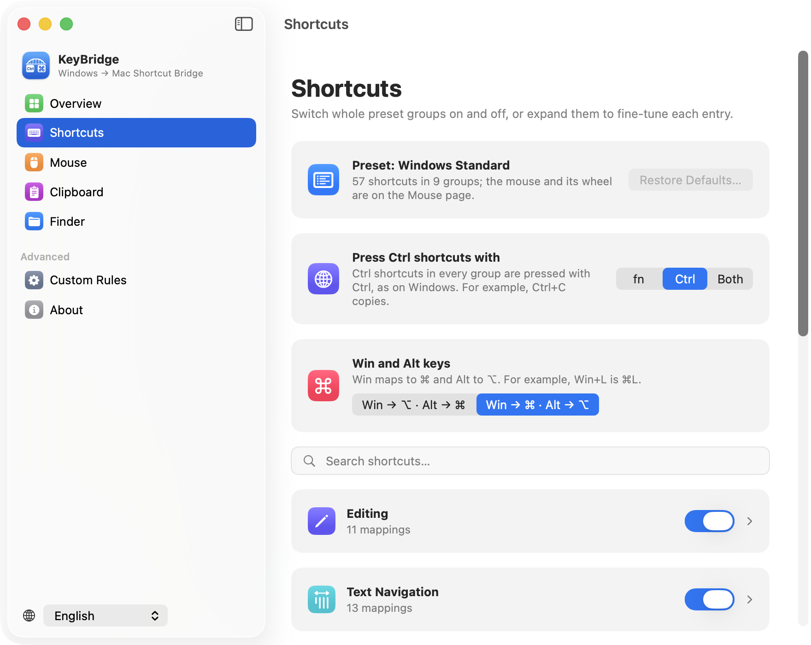
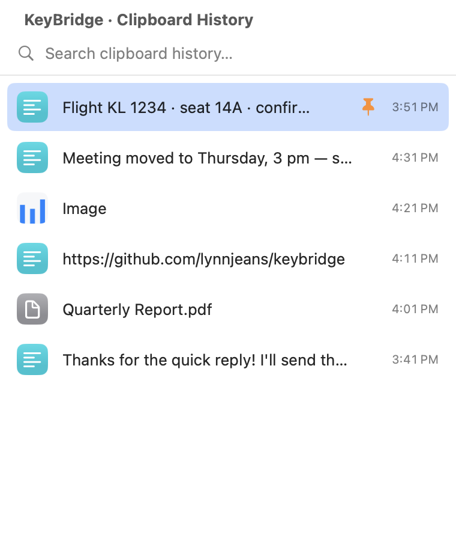

For everyone who moved from Windows to Mac
New Mac. Same Keys.
Your Windows shortcuts, on your Mac.
SameKeys makes Ctrl+C copy, Win+V open your clipboard history, and your mouse wheel scroll the Windows way, so years of muscle memory keep working.
Free and open source · macOS 14 or later

One app, not five.
On a Mac, getting your Windows habits back usually means a separate app for each: one for the keyboard, one for the mouse, one for clipboard history… Each to find, install, allow and set up. SameKeys brings them all together, set up the Windows way from the first launch. That is why I made it.
Keyboard shortcuts
Ctrl+C, Home and End, F2: 58 Windows shortcuts, ready at first launch.
Mouse and wheel
Side buttons go back and forward, fn or Ctrl + scroll zooms the page, and the wheel turns the Windows way.
Clipboard history
Win+V opens what you copied, with search and pinning.
Window snapping
Put a window on the left or right half, or fill the screen, as with Win+←.
Finder
Delete, F2, cut and paste files, and New Document in the right-click menu.
Your hands already know what to do.
A Mac does many everyday things with different keys, or not at all. SameKeys turns what you press into what the Mac expects.
| On Windows | On a Mac | With SameKeys |
|---|---|---|
| Ctrl+C Ctrl+V Ctrl+Z | It’s ⌘ for copy, paste and undo | Copy, paste, undo, save, find… |
| Home End | Scrolls to the top or bottom of the page | Start and end of the line |
| Ctrl+← Ctrl+→ | Switches desktops | Moves a word at a time |
| Mouse side buttons | Do nothing | Back and forward |
| Ctrl+scroll | Zooms the whole screen, or nothing | Zooms the page, with fn or Ctrl |
| Mouse wheel direction | Reversed, together with the trackpad | Windows direction, trackpad untouched |
| Delete F2 Enter in Finder | Enter renames, the others do nothing | Delete, rename, open |
| Alt+Tab Alt+F4 | It’s ⌘+Tab and ⌘+Q | Switch apps, quit |
| Ctrl+Shift+Esc | Nothing | Opens Activity Monitor |
| PrtScn | Nothing | Screenshot to the clipboard |
| Win+← Win+→ Win+↑ | Different keys: fn+Ctrl+arrows, from macOS 15 | Half the screen or full, with ⌥+arrows |
| Win+V clipboard history | Doesn’t exist | Built in, with ⌥V |
Thought through for the switch.
Any keyboard
Works with a PC keyboard and with a Mac keyboard. Press Ctrl as on Windows, or use fn in its place and keep Ctrl for the Mac. Your choice, or both.
Terminals left alone
In Terminal and iTerm, Ctrl+C still stops the running program. SameKeys knows where Ctrl means something else.
Yours to adjust
Switch whole groups on and off, record a different shortcut for any entry, or write your own rules, for every app or just one.
Mouse and trackpad apart
Wheel direction and zoom change for the mouse only. Trackpad gestures keep working the Mac way.
Small and quiet
Lives in the menu bar and pauses with one click. No system extension or keyboard driver to install.
In your language
English, 简体中文, 繁體中文, 日本語, 한국어, Deutsch, Français, Español, Português and Polski.
Clipboard history, like Win+V.
Press ⌥V for everything you copied recently, right where your pointer is. Pick one and it’s pasted.
- Text, images and files, searchable
- Pin what you paste often
- Passwords from password managers are never kept
- Stays on your Mac, never uploaded. Off until you turn it on.

Finder, the File Explorer way.
The keys and menus you used in File Explorer work in Finder and in every open and save dialog.
Explorer keys
Delete, F2 and Enter delete, rename and open. Backspace goes up a folder.
Cut and paste files
Ctrl+X, then Ctrl+V in another folder, moves the files there.
New in the right-click menu
Create a text, Word, Excel or PowerPoint document, copy a path, or open Terminal right there.
Paste a path
In Finder or a dialog, press Ctrl+Shift+G and paste a path to go to a folder or open a file, like File Explorer’s address bar.
Open and save dialogs
Ctrl+G jumps to the folder open in Finder, and Ctrl+Shift+G lists recent and favorite folders.
Favorite folders
Add a folder to SameKeys’s favorites from Finder’s right-click menu, and reach it from any dialog.
Two permissions, and why.
macOS asks you to allow two things before any app may change what your keys do.
SameKeys records no keystrokes. It looks at each key press only to decide whether it’s a shortcut to translate, then lets it go. There are no analytics, and every line of the code is public.
Get SameKeys.
macOS 14 or later · free
Or with Homebrew:
brew install --cask lynnjeans/tap/samekeys- Open the disk image and double-click SameKeys: it installs itself in Applications, opens, and walks you through the two permissions.
- Using Karabiner-Elements or a similar tool? Quit it while SameKeys runs, so the two don’t fight over the same keys.
Questions
How do I make Ctrl+C copy on a Mac?
macOS uses ⌘ (Command) for copy, paste and most shortcuts. Install SameKeys and it’s on: Ctrl+C, Ctrl+V, Ctrl+Z, Ctrl+S and the rest do what they did on Windows, everywhere except terminals, where Ctrl+C has to stop programs.
Why don’t Home and End work on a Mac?
On a Mac, Home and End scroll to the top and bottom of a document, and the start or end of a line is ⌘← and ⌘→. SameKeys sends those for you, and Shift+Home, Shift+End, Ctrl+Home and Ctrl+End select and jump as they did on Windows.
Can my mouse scroll the other way from my trackpad?
Not with macOS alone: its “Natural scrolling” setting turns the mouse wheel and the trackpad around together. In SameKeys, switch on “Windows scroll direction” on the Mouse page: the wheel then scrolls as on Windows, and the trackpad and a Magic Mouse keep natural scrolling.
Does it work with an Apple keyboard?
Yes. The Control key sits where it did on your PC. If you’d rather keep Ctrl for Mac shortcuts, choose fn and press fn+C to copy instead.
Is SameKeys free?
Yes, and open source under the GNU General Public License v3. Anyone can read, build and improve the code. If it saves you some frustration, you can sponsor the project, but you never have to.
How is it different from Karabiner-Elements?
Karabiner-Elements is a powerful tool for remapping single keys and building layers. SameKeys does one job, Windows habits on a Mac, ready to use at first launch, and handles the mouse and scroll wheel too. It needs no system driver.
Does SameKeys connect to the internet?
Only to check for updates, once a day. It reads the list of versions on this website and sends nothing about you or your Mac, and a new version installs only when you choose to. Turn off “Check for updates automatically” on the About page and SameKeys never goes online.
How do I cut and paste files on a Mac?
Finder has no Cut for files: you copy with ⌘C, then move with ⌥⌘V. With SameKeys, Ctrl+X and Ctrl+V move files as they did on Windows, and the right-click menu can create new documents and open Terminal in the folder.
Can I snap windows to half the screen like Win+←?
Yes. With SameKeys, ⌥+← and ⌥+→ put the front window on the left or right half of the screen, ⌥+↑ fills the screen and ⌥+↓ minimizes. On a Mac keyboard, ⌥ sits where the Windows key is. macOS 15 and later also have fn+Ctrl+arrows built in.
Enjoying SameKeys?
SameKeys is free and open source, and it will stay that way. If it saves you some frustration, a sponsorship keeps the work going — never required, always appreciated.
Sponsor on GitHub